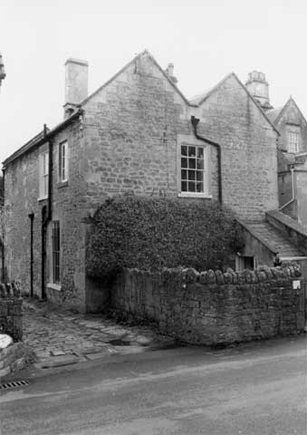

Type of building:
Former wing of a small country house
Listing:
Grade ll
Plan and elevation:
Double pile, two units. Two storeys (west part of the house), two storeys and
attics (east part of the house)
Summary of the probable main building
history:
Late 17th Century. Substantial alterations and additions in the late 18th Century.

West elevation
Exterior:
The west elevation, which is the main entry elevation, is built of coursed rubble.
There is one six-over-six sash window with some crown glass panes on the first
floor but no windows at ground floor level. The entry has a dressed stone surround
with beaded moulding and is protected by an added lean-to stone porch. The pitched
“M” shaped roof is slated. The return or north elevation is much altered
and repaired. It is built of rough coursed rubble with some odd ashlar blocks
including apparent ex-quoins. There is one six-over-six ground floor sash window
and one first floor mullion window of ovolo section although somewhat mutilated
being either reduced in size from the original or a later insertion. The east
or rear elevation is of coursed rubble. There is a two-light mullion window on
the ground floor with an inserted (but blocked and mutilated) bulls-eye window
immediately adjacent and two three-light mullions (ogee and chamfer section) on
the first floor. Continuous drip labels are over the ground and the first floor
windows. The door surround is of dressed stone and beaded.
Interior:
The entry is guarded by a planked and braced door with a wooden stock lock. The
hall to the left of the principal entry is relatively lofty at 3.34m. high. The
floor is of pennant stones and the window opening is splayed. The doors are either
planked with iron strap hinges secured by iron nails or six-panelled. There is
a large stone fireplace formerly housing an iron range (information from the owner).
The floor slopes down into the kitchen at the rear of the house. This room is
also floored with pennants. Against the north wall there is a large depressed
four-centred arched and chamfered stone fireplace which, nevertheless, has been
reduced in width at some time subsequent to installation. The fireplace contains
a crane mechanism, a bread oven with an iron door labelled “16”, a
storage alcove adjacent and another oven under with an iron door labelled “10”
and the makers name, “Dale Co”. The living room on the first floor
over the kitchen possesses a small stone fireplace with ogee and beaded moulding.
Left of the fireplace the wall is curved believed to mark the placement of a former
semi-circular staircase leading down to the kitchen (where its positioning has
been obliterated by the inserted fireplace). The door into the living room is
three planked and braced with ogee mouldings fitted with iron “L”
hinges and nail secured. The attic rooms above are floored with elm boards up
to 15 ins. wide. The roof timbers over the attics are exposed and are collared
with purlins cut back at the joints with the principals and tusk tenoned. The
principals rest upon wall plates, which appear to be of an earlier and different
roof arrangement, being of substantial scantling but subsequently built out to
accommodate the principals, which themselves have empty mortices. The top of an
exterior west wall of an earlier building period is also evident from which another
roof over the hall (and the first floor room above) has been erected. It is clear
from this and from the evidence of different internal levels, both on the ground
and the first floors, that the house has been built in two distinct periods.
Date & development:
The evidence indicates that the eastern part of the cottage, consisting of the
kitchen, the first floor living room and attic rooms above, are of very late 17th
Century construction and formerly constituted the north wing of the adjoining
house, the porch of which bears the date 1670 and the initials J.F. (presumably
John Fisher). The north wing, however, must somewhat post-date this as it appears
to be a later extension of the house at about the turn of the 17th and 18th centuries
In the late 18th Century the wing was extended westwards, being the present hall
and the first floor room above, and the entire wing equipped as a new service
area for the big house. At the same time, there was a substantial rebuilding of
the roof structure to create a more fashionable “M” shaped roof. Apart
from the addition of a lean-to porch and the presumed blocking of internal interconnecting
doors (not evident), there has been little alteration since the late 18th Century.
Ownership/occupation:
The house was built by a family of clothiers, the Fishers’, who also owned
the mill complex (see property No. BE 039). The Fisher family was present in Batheaston
from at least the late 16th Century and were prominent landowners as well as clothiers.
The family retained ownership of the house until the death of Mrs Jane Fisher
in 1863 (see Dobbie p.75- 78).
References:
- “An English Rural Community” B.M. Willmott Dobbie Bath University
Press 1969
Reference Pictures
| Late 18th century kitchen fireplace with ovens and grate | Kitchen cupboard |
Survey Drawings
| Ground Plan | Section |